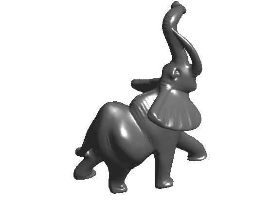
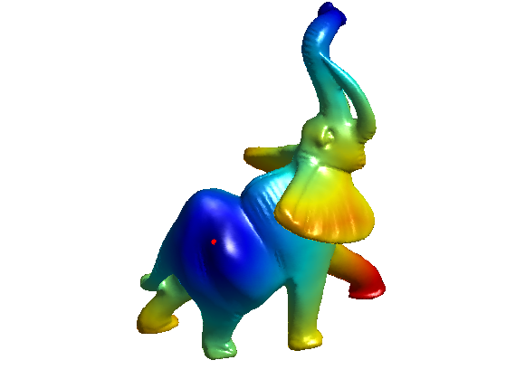
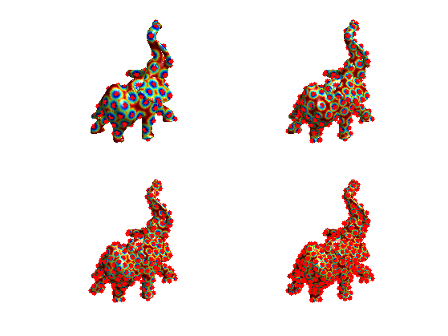
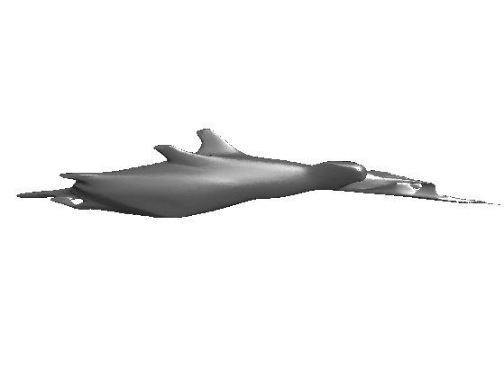

Geodesic Bending Invariants with Landmarks
This tour explores the use of farthest point sampling to compute bending invariant with classical MDS (strain minimization).
Contents
Installing toolboxes and setting up the path.
You need to download the following files: signal toolbox, general toolbox and graph toolbox.
You need to unzip these toolboxes in your working directory, so that you have toolbox_signal, toolbox_general and toolbox_graph in your directory.
For Scilab user: you must replace the Matlab comment '%' by its Scilab counterpart '//'.
Recommandation: You should create a text file named for instance numericaltour.sce (in Scilab) or numericaltour.m (in Matlab) to write all the Scilab/Matlab command you want to execute. Then, simply run exec('numericaltour.sce'); (in Scilab) or numericaltour; (in Matlab) to run the commands.
Execute this line only if you are using Matlab.
getd = @(p)path(p,path); % scilab users must *not* execute this
Then you can add the toolboxes to the path.
getd('toolbox_signal/'); getd('toolbox_general/'); getd('toolbox_graph/');
Farthest Points Landmarks Seeding
For large mesh, computing all the pairwise distances is intractable. It is possible to speed up the computation by restricting the computation to a small subset of landmarks.
This seeding strategy was used for surface remeshing in:
Geodesic Remeshing Using Front Propagation, Gabriel Peyré and Laurent Cohen, International Journal on Computer Vision, Vol. 69(1), p.145-156, Aug. 2006.
Load a mesh.
name = 'elephant-50kv';
options.name = name;
[vertex,faces] = read_mesh(name);
nverts = size(vertex,2);
Display it.
clf; plot_mesh(vertex,faces, options);
Compute a sparse set of landmarks to speed up the geodesic computations. The landmarks are computed using farthest point sampling.
First landmarks, at random.
landmarks = 23057; Dland = [];
Perform Fast Marching to compute the geodesic distance, and record it.
[Dland(:,end+1),S,Q] = perform_fast_marching_mesh(vertex, faces, landmarks(end));
Select farthest point. Here, min(Dland,[],2) is the distance to the set of seed points.
[tmp,landmarks(end+1)] = max( min(Dland,[],2) );
Update distance function.
[Dland(:,end+1),S,Q] = perform_fast_marching_mesh(vertex, faces, landmarks(end));
Display distances.
clf; options.start_points = landmarks; plot_fast_marching_mesh(vertex,faces, min(Dland,[],2) , [], options);
Exercice 1: (check the solution) Compute a set of n = 300 vertex by iterating this farthest point sampling. Display the progression of the sampling.
exo1;
Compute the distance matrix restricted to the landmarks.
D = Dland(landmarks,:); D = (D+D')/2;
Bending Invariant by Strain Minimization and Nistrom Interpolation
One can compute the bending invariant of the set of landmarks, and then apply it to the whole mesh using interpolation.
Compute a centered kernel for the Landmarks, that should be approximately a matrix of inner products.
J = eye(n) - ones(n)/n; K = -1/2 * J*(D.^2)*J;
Perform classical MDS on the reduced set of points, to obtain new positions in 3D.
opt.disp = 0;
[Xstrain, val] = eigs(K, 3, 'LR', opt);
Xstrain = Xstrain .* repmat(sqrt(diag(val))', [n 1]);
Xstrain = Xstrain';
Interpolate the locations to the whole mesh by Nystrom eigen-extrapolation, as detailed in
Sparse multidimensional scaling using landmark points V. de Silva, J.B. Tenenbaum, Preprint.
vertex1 = zeros(nverts,3); deltan = mean(Dland.^2,1); for i=1:nverts deltax = Dland(i,:).^2; vertex1(i,:) = 1/2 * ( Xstrain * ( deltan-deltax )' )'; end vertex1 = vertex1';
Display the bending invariant mesh.
clf; plot_mesh(vertex1,faces,options);
Farthest Point for Stress Minimization
The proposed interpolation method is valid only for the Strain minimizer (spectral Nistrom interpolation). One thus needs to use another interpolation method.
See for instance this work for a method to do such an interpolation:
A. M. Bronstein, M. M. Bronstein, R. Kimmel, Efficient computation of isometry-invariant distances between surfaces, SIAM J. Scientific Computing, Vol. 28/5, pp. 1812-1836, 2006.
Exercice 2: (check the solution) Create an interpolation scheme to interpolate the result of MDS dimensionality reduction with Stree minimization (SMACOF algorithm).
exo2;